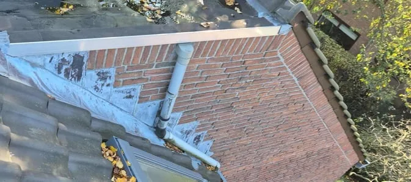
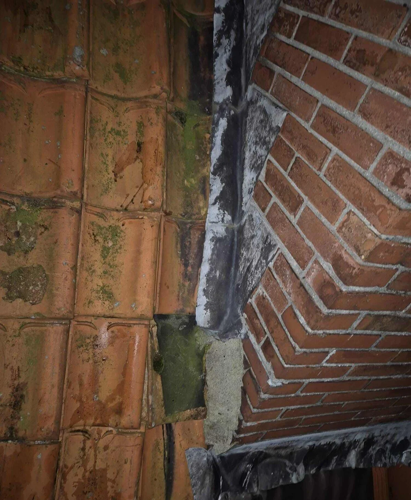
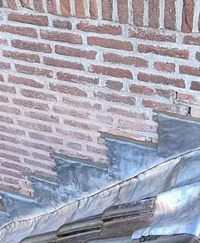

Trapsgewijs lood vervangen
Trapsgewijs lood ook wel loodloketten genoemd, is de manier om een gevel aan te sluiten om het dakvlak. Is uw trapsgewijs lood aan vervanging toe?
- ✓Diensten loodafwerkingen >
- ✓Onze experts staan voor u klaar. Ontvang gratis advies of meer informatie over uw specifieke situatie!
- ✓Heldere inspectie en duidelijke uitleg vooraf

Situaties uit de praktijk
Beelden van dakdetails, slijtage of werkzaamheden die passen bij dit onderwerp.


Wat u moet weten
Aansluitingen tussen gevels en schuine of hellende objecten worden veelal uitgevoerd met lood. Dit trapsgewijs lood ook wel loodloketten genoemd, is een betrouwbare en degelijke manier van aansluiten. Hoe wij van Daklekkages Opgelost te werk gaan bij het vervangen van trapsgewijs lood leest u hier, of neem direct contact op via onderstaande button!
- ✓Diensten loodafwerkingen >
Wanneer trapsgewijs lood vervangen?
Het vervangen trapsgewijs lood, is vanzelfsprekend als u lekkage ervaart op deze aansluiting. Maar wanneer u, lekkage ervaart dan bent u eigenlijk te laat. Er is dan vaak al gevolgschade opgetreden. Veroudert loodwerk is te herkennen aan haarscheurtjes, deze oppervlakkige, gekartelde scheurtjes zijn een eerste teken dat het loodwerk heel dicht bij het einde van zijn levensduur is gekomen. Om uw loodwerk op tijd te vervangen, is de beste methode dan ook de dikte van het loodwerk meten. Trapsgewijs lood ook wel loodloketten genoemd, dienen tenminste te worden uitgevoerd met 18-ponds bladlood, dit heeft een dikte van 1,59 mm. Wanneer het loodwerk tot in de spouw wordt aangebracht is het aan te bevelen de loketten uit te voeren met 20-ponds bladlood.
Hoe trapsgewijs lood vervangen?
Het vervangen van trapsgewijs lood, begint uiteraard bij het verwijderen van de bestaande loodslabben. Bij het aanbrengen van het nieuwe trapsgewijze lood worden de trapjes (loketten) altijd tenminste 60 mm in het metselwerk geplaatst. De voegen worden uitgefreesd met een voegenfrees tot een diepte van 65 mm. Vervolgens wordt er eerste een goot van bladlood aangebracht in L-vorm, deze wordt indien nodig in de vorm van dakpannen of andere aansluiting gedreven of geklopt.
Vervolgens worden de trapjes / loketten in de voeg geplaatst en vastgezet middels voegklemmen. Tot slot worden de voegen dichtgezet en is de aansluiting weer jaren waterdicht.
Kosten trapsgewijs lood vervangen?
De kosten voor het vervangen van trapsgewijs lood zijn natuurlijk afhankelijk van de locatie en bereikbaarheid van het loodwerk. Trapsgewijs lood vervangen kan al vanaf €135,- exclusief btw per meter. Kom in contact, voor een offerte op maat!
Advies of meer informatie nodig?
Onze experts staan voor u klaar. Ontvang gratis advies of meer informatie over uw specifieke situatie!
Wilt u zekerheid over uw dak?
Laat de situatie beoordelen voordat schade groter wordt. U krijgt helder advies over wat nodig is, wat kan wachten en welke oplossing duurzaam is.